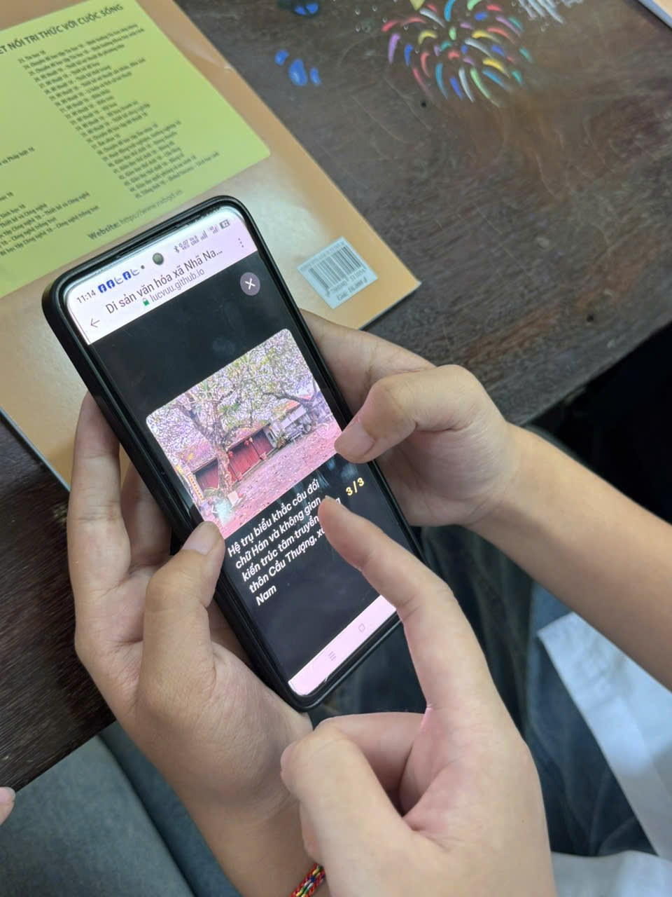

Hình Ảnh Học Sinh Trải Nghiệm Và Sử Dụng Website
Hình ảnh ghi nhận thực tế học sinh tham gia các giờ học trải nghiệm, quét mã QR tra cứu bản đồ số và tìm hiểu 37 di tích trên Cổng thông tin số hóa.

Học sinh quét mã QR tại bàn học, mở giao diện Cổng thông tin trên điện thoại di động để tra cứu thông tin di tích lịch sử.

Nhóm học sinh cùng thảo luận và tra cứu lộ trình 03 tuyến tham quan ngoại khóa tích hợp trên bản đồ số hóa.

Học sinh thực hiện bài kiểm tra trắc nghiệm 10 câu ngẫu nhiên trong ngân hàng 40 câu hỏi địa chí Nhã Nam.

Trải nghiệm tính năng nghe thuyết minh âm thanh giọng đọc chuẩn hóa (Audio Guide) trong tiết học Giáo dục địa phương.

Toàn cảnh tiết học ứng dụng công nghệ số: Học sinh tương tác trực tiếp với nền tảng, tạo không khí học tập sôi nổi, hứng thú và chủ động.